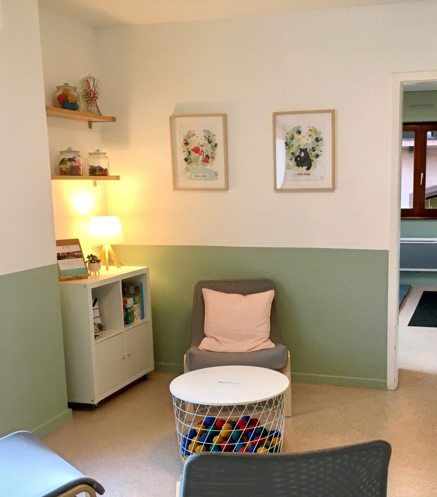
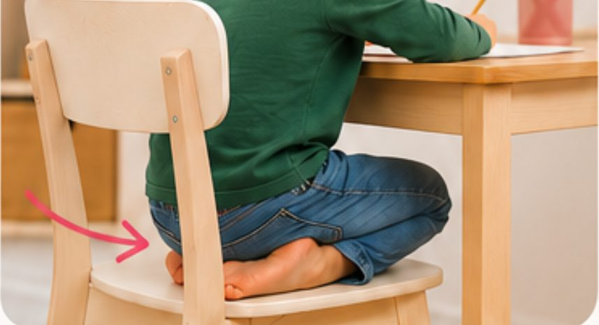

Réflexes archaïques · Obernai, près de Strasbourg
J'aide ceux qui ne rentrent ni dans les cases ni dans le moule à accéder à leur plein potentiel
Je suis Sandy, praticienne et formatrice à Obernai, et j'accompagne tous les âges de la vie grâce à l'intégration des réflexes archaïques.

@sandy_abcdesreflexesLes enjeux
Les réflexes archaïques sont les premiers gestes instinctifs du bébé
Dès la naissance
Le bébé active des gestes instinctifs et essentiels qui constituent ses réflexes primitifs, comme le réflexe de Moro, le réflexe de succion ou l'agrippement.
Au fil des mois
En répétant ces mouvements involontaires, le nourrisson automatise ses schémas sensori-moteurs. Ses réflexes s'intègrent en bâtissant un réseau de communication entre toutes les parties du système nerveux.
Quand un réflexe reste actif
Un réflexe qui n'a pas pu s'intégrer peut créer un parasitage dans le corps et réduire la spontanéité des mouvements. Ce manque initial peut peser sur les sphères cognitive, émotionnelle et corporelle.
Heureusement, il est possible d'évaluer si les réflexes sont intégrés et de les remodeler quand ils ne le sont pas.
Consultations
On vient me voir pour des difficultés qui touchent la tête, le cœur ou le corps
J'accueille les enfants, les adolescents et les adultes. Voici les situations que l'on retrouve dans chacune des trois sphères.
Sphère cognitive
- Manque de concentration
- Difficultés d'organisation
- Problèmes de mémoire
- Problèmes de graphisme
- Difficultés en lecture et en écriture
- Difficultés de communication
- Troubles dys (dyslexie, dyscalculie, dysorthographie, dysphasie, dyspraxie)
- TDA/H, TSA
Sphère émotionnelle
- Agitation et hyperactivité
- Forte émotivité, hypersensibilité
- Problèmes relationnels
- Troubles alimentaires
- Gestion du stress, burn-out
- Angoisses, phobies
- Manque de confiance en soi, timidité excessive
- Tics, tocs
Sphère corporelle
- Troubles de la posture
- Maladresse et chutes
- Manque de tonus musculaire
- Problèmes d'équilibre et de coordination
- Mal de dos, vertige
- Mal des transports
- Énurésie, encoprésie
- Marche sur la pointe des pieds
- Difficultés dans certains sports
Mon approche en réflexes ne se substitue pas à des traitements ou à des suivis médicaux. Je ne te demanderai jamais d'interrompre un suivi en cours, et je travaille en lien avec des psychologues, orthophonistes, ostéopathes, orthoptistes et graphothérapeutes.
Comment ça marche
Voici comment se passe un suivi avec moi
Le premier rendez-vous
Nous faisons connaissance et nous échangeons autour des raisons de ta visite et de ton parcours de vie. Je teste ensuite tes réflexes à travers des mouvements simples, puis je te rédige un compte-rendu de bilan initial.
Le suivi en réflexes
Le nombre de séances s'adapte à tes besoins et à ton objectif de travail. Les exercices sont variés et ludiques, et tu restes pleinement acteur de tes mouvements.
Entre deux séances
Tu repars avec un programme individuel sur mesure, fait de quelques mouvements à réaliser chez toi pour parfaire l'intégration des réflexes travaillés au cabinet.

Qui suis-je
Je suis Sandy, alsacienne d'adoption et maman de deux vikings
J'ai t'huit ans (parce que je ne retiens jamais mon âge), une curiosité débordante et une soif d'apprendre et de transmettre insatiable. C'est ce qui m'a donné envie de devenir maîtresse, un métier que j'ai exercé pendant 15 ans.
La naissance de mes enfants a profondément fait bouger les lignes. Grâce à eux, j'ai basculé dans le monde merveilleux et coloré de la neurodiversité, et je suis devenue praticienne en réflexes archaïques en 2018.
En 2023, je suis devenue formatrice en intégrant l'équipe d'Arc en Flex. J'ai aussi co-créé le module INDIGO « Je dynamise les apprentissages » avec Laurence Thibaud et Bénédicte Cazals, la fondatrice de l'école.
Ma boîte à outils ressemble à la valise de Mary Poppins
Tu te souviens de cette valise magique dont elle sort tour à tour un porte-manteau, un miroir, une plante ou un lampadaire ? C'est l'image que j'ai de mes outils, parce que j'ai plus d'un tour dans mon sac.
Mes outils de maîtresse
Pendant mes années dans l'enseignement, j'ai cherché des techniques pour aider les enfants qui rencontraient des difficultés à l'école ou dans leur quotidien, et leurs parents avec eux. Ma classe a toujours été un espace où l'on bouge et où l'on explore.
Mes outils de maman
Je suis maman de deux garçons qui ont reçu la même éducation et qui ont deux profils neuroatypiques bien distincts. Mon aîné m'a fait découvrir le haut potentiel, et mon plus jeune m'a poussée à explorer l'hypersensibilité.
Mes outils de praticienne
J'ai découvert les réflexes archaïques en 2016. Cette approche intégrative tient compte de la personne dans son ensemble, au niveau cognitif (la tête), émotionnel (le cœur) et somatique (le corps).
Au cabinet avec moi
Quand je ne consulte pas, ma collègue Marjorie te reçoit à la même adresse
Marjorie Ebel est praticienne certifiée en réflexes archaïques pour la méthodologie Arc-En-Flex®. Elle accompagne les enfants, les adolescents et les adultes, et elle est présente au cabinet le mardi et le samedi.
À compléter avec Marjorie : sa photo et quelques mots sur son parcours.
Très bonne professionnelle. Elle « dénoue » les difficultés je trouve. Je recommande sans réserve !
Formations
Je forme aussi les professionnels aux réflexes archaïques
Je propose le cursus complet de certification praticien Arc-en-Flex®, du module de base jusqu'à la pratique professionnelle, en Alsace toute l'année et en Belgique à partir de 2027.
- Module Rougedu 7 au 10 décembre 2026 à Obernai
- Module Rougedu 12 au 15 février 2027 près de Bruxelles
- Module Orangedu 4 au 7 mars 2027 à Obernai

Le blog
Je décode sur le blog les comportements du quotidien

Réflexe de Moro et sommeil : pourquoi ton enfant dort mal
Ton enfant se réveille en sursaut, dort les bras en croix, sursaute au moindre bruit ? Ce n'est peut-être pas une question de rituel du soir, mais de…

Et si je te disais que la façon dont ton enfant s’assoit n’est pas un hasard ?
la façon dont ton enfant s’assoit n’est pas un hasard, je décode tout pour toi avec l'éclairage des réflexes archaïques
Non, ce n'est pas normal que ton enfant porte tout à la bouche
Que ce soit les doigts, les cheveux, les vêtements ou des objets... porter des choses à la bouche après 3 ans révèle presque toujours la même chose…
Je partage aussi des repères et des mouvements à tester à la maison sur Instagram
@sandy_abcdesreflexesContact
Le cabinet se trouve au cœur d'Obernai, à 25 minutes de Strasbourg
Tu peux réserver ta séance en ligne
Le premier rendez-vous est un bilan de 90 minutes : nous faisons connaissance, je teste tes réflexes et je te remets un compte-rendu.
1, place des Fines Herbes, 67210 Obernai
À 25 minutes de Strasbourg et 40 minutes de Colmar. Le parking est au pied de l'immeuble et le cabinet se trouve au 1ᵉʳ étage, avec un ascenseur.
| Lundi | Sandy |
| Mardi | Marjorie |
| Mercredi | Sandy |
| Jeudi | fermé |
| Vendredi | Sandy |
| Samedi | Marjorie |
| Dimanche | fermé |
Les créneaux disponibles s'affichent au moment de la réservation.